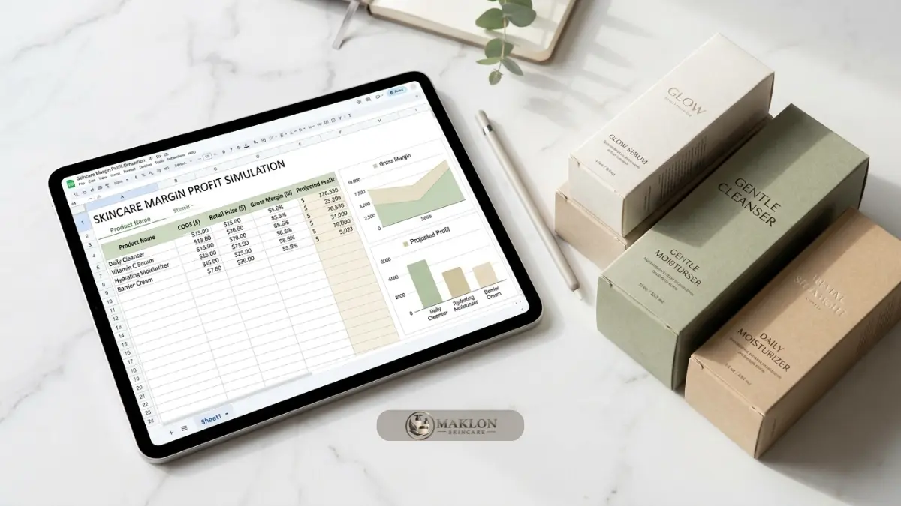

Biaya maklon skincare OEM terdiri dari harga produksi per unit, kemasan, legalitas, dan biaya awal, yang dihitung menjadi HPP untuk menentukan margin profit.
- Biaya maklon bukan hanya harga produksi per unit, tetapi juga kemasan, uji, legalitas, desain, dan stok.
- HPP dihitung dari seluruh biaya per unit, lalu menjadi dasar harga jual dan margin.
- Margin bersih harus memperhitungkan biaya marketplace, iklan, dan promosi.
- Titik impas dihitung dari total biaya awal dibagi margin bersih per unit.
Mengapa Biaya Maklon Skincare OEM Perlu Dihitung Sejak Awal?
Biaya maklon skincare OEM perlu dihitung sejak awal karena persaingan merek semakin ketat dan margin tipis dapat membuat brand baru sulit bertahan.
Data BPOM yang dikutip Kemenperin mencatat jumlah industri kosmetik dalam negeri naik dari 1.292 pada 2024 menjadi lebih dari 1.500 pada akhir 2025, dengan sekitar 90 persen merupakan industri kecil dan menengah.
Artinya, brand baru bersaing dengan banyak pelaku lain yang juga menawarkan produk serupa di pasaran.
Dalam kondisi itu, brand yang tidak memahami struktur biayanya cenderung salah menetapkan harga jual produk.
Harga terlalu rendah menggerus margin laba, sedangkan harga terlalu tinggi sulit bersaing. Perhitungan sejak awal juga membantu menentukan jumlah pesanan perdana yang aman bagi kelancaran arus kas bisnis Anda.
Apa Saja Komponen Biaya Maklon Skincare OEM?
Komponen biaya maklon skincare OEM mencakup biaya formulasi, bahan dan produksi per unit, kemasan, uji laboratorium, legalitas, desain, serta ongkos kirim dan penyimpanan.
- Biaya formulasi dan sampel: pengembangan formula khusus pada skema OEM, termasuk revisi. Beberapa pabrik memasukkannya ke harga produksi, sebagian menagih terpisah.
- Harga produksi per unit: pembelian bahan baku, proses pembuatan sediaan di ruang steril, dan pengisian ke dalam kemasan.
- Kemasan: botol, tutup, dropper, jar, dus luar, label, dan stiker segel keamanan. Kemasan kustom menambah pos biaya per unit.
- Uji produk: uji stabilitas sediaan, uji efektivitas pengawet, mikrobiologi, atau uji klaim dermatologis sesuai kebutuhan.
- Legalitas: biaya notifikasi BPOM, sertifikasi halal resmi, serta kelengkapan legalitas badan usaha.
- Desain dan branding: logo brand, tata letak desain kemasan, dan foto katalog produk komersial.
- Logistik: biaya pengiriman bahan kemasan ke pabrik, pengiriman produk jadi ke gudang brand, dan sewa penyimpanan stok.
Apa Faktor yang Menentukan Harga per Unit Maklon Skincare?
Harga per unit maklon skincare dipengaruhi jenis sediaan, bahan aktif, jumlah pesanan minimum, jenis kemasan, dan tingkat kustomisasi formula yang diminta pemilik brand.
Jenis sediaan menentukan tingkat kesulitan produksi. Pembersih atau toner umumnya lebih sederhana daripada emulsi krim atau sunscreen dengan banyak bahan aktif kompleks.
Bahan aktif tertentu lebih mahal dan memerlukan penanganan khusus di laboratorium agar sediaannya tetap stabil.
MOQ (Minimum Order Quantity) berpengaruh langsung. Pesanan dalam jumlah lebih besar biasanya menurunkan harga per unit, tetapi menaikkan modal awal dan risiko penyimpanan stok.
Kustomisasi formula pada skema OEM menambah waktu dan biaya pengembangan dibanding memakai formula ODM siap pakai. Karena variabelnya banyak, mintalah penawaran tertulis yang merinci setiap komponen dari pihak pabrik maklon skincare.
Bagaimana Cara Menghitung HPP Produk Skincare Maklon?
HPP skincare maklon dihitung dengan menjumlahkan harga produksi per unit, kemasan, label, dan biaya pendukung, lalu membaginya dengan jumlah unit yang diproduksi.
Rumus sederhananya: HPP per unit = (harga produksi + kemasan + label + biaya pendukung per unit) ditambah biaya awal yang dibebankan per unit.
Simulasi dengan angka contoh (bukan penawaran harga): serum 30 ml.
- Harga produksi per unit: Rp22.000
- Kemasan dan dus: Rp8.000
- Biaya uji dan logistik per unit: Rp2.000
- HPP per unit: Rp32.000
Biaya awal seperti legalitas dan desain dihitung terpisah sebagai modal awal, lalu dimasukkan ke dalam perhitungan titik impas bisnis Anda.

Bagaimana Cara Menentukan Harga Jual dan Margin Profit?
Harga jual ditentukan dari HPP ditambah biaya penjualan dan target margin, lalu dibandingkan dengan harga kompetitor agar tetap masuk akal bagi target konsumen.
Lanjutan simulasi dengan harga jual contoh Rp99.000:
- Biaya marketplace dan admin (contoh 12 persen): Rp11.880
- Iklan dan promosi (contoh 25 persen): Rp24.750
- HPP per botol: Rp32.000
- Sisa margin bersih per unit: Rp30.370, atau sekitar 30,7 persen dari harga jual etalase.
Margin kotor sebelum biaya penjualan adalah Rp67.000, atau sekitar 67,7 persen. Perbedaan kedua angka ini menunjukkan mengapa margin kotor yang tampak besar bisa menyesatkan.
Persentase biaya penjualan dan iklan berbeda pada tiap brand, jadi sesuaikan dengan kondisi dan saluran distribusi utama Anda.
Berapa Modal Awal dan Kapan Balik Modal?
Modal awal brand skincare maklon mencakup produksi perdana, legalitas, desain, dan pemasaran, sedangkan titik impas dihitung dari total biaya awal dibagi margin bersih per unit.
Misalkan biaya awal non-produksi (legalitas BPOM, sertifikasi halal, desain merek, foto produk, dan persiapan administrasi) contoh Rp15.000.000.
Dengan margin bersih Rp30.370 per unit, titik impas dicapai sekitar 494 unit terjual (Rp15.000.000 dibagi Rp30.370). Angka ini belum termasuk modal produksi perdana yang tertahan sebagai stok barang.
Gunakan perhitungan ini untuk menentukan jumlah pesanan perdana. Pesanan yang terlalu besar mengikat arus kas, sedangkan pesanan terlalu kecil bisa membuat harga per unit tinggi. Cari titik tengah yang mengikuti kemampuan pemasaran Anda.
Bagaimana Cara Menekan Biaya Tanpa Menurunkan Kualitas?
Biaya maklon dapat ditekan dengan membatasi jumlah varian, memilih kemasan standar, menegosiasikan MOQ, dan memakai formula siap pakai, tanpa mengorbankan keamanan atau legalitas produk.
- Mulai dari satu sampai tiga produk andalan agar modal awal tidak terpecah ke banyak varian stok.
- Gunakan kemasan standar yang tersedia di gudang pabrik sebelum beralih ke kemasan cetak kustom yang membutuhkan MOQ tinggi.
- Pertimbangkan formula ODM yang disesuaikan sedikit parameter aromanya, lalu naik ke formula OEM eksklusif setelah pasar terbukti.
- Negosiasikan MOQ bertahap atau jadwal produksi ulang yang fleksibel dengan pihak manajemen pabrik.
- Jangan memangkas uji lab dan legalitas resmi, karena risiko penarikan produk di pasar jauh lebih mahal daripada penghematan sesaat.
Apa Biaya Tersembunyi yang Sering Terlewat?
Biaya tersembunyi dalam maklon skincare meliputi revisi formula, uji tambahan, penyimpanan stok, produk retur, biaya kirim bahan kemasan, dan pembaruan legalitas saat formula berubah.
Revisi formula di luar jatah yang disepakati dapat ditagih terpisah. Perubahan formula atau klaim kadang memerlukan pembaruan notifikasi dan uji laboratorium ulang.
Stok yang menumpuk menimbulkan biaya gudang, sedangkan produk kedaluwarsa menjadi kerugian total. Retur dan penggantian produk rusak selama ekspedisi juga memengaruhi margin keuntungan riil.
Cegah kejutan biaya dengan meminta pabrik menuliskan batas revisi sampel, kebijakan produk cacat, dan rincian biaya tambahan dalam kontrak tertulis.
Panduan memilih pabrik lengkap ada di panduan maklon skincare OEM terbaik untuk pemula, sedangkan perbandingan skema produksi dibahas di keunggulan maklon skincare OEM dan perbandingan skema.
Simulasi Biaya Awal Maklon Skincare Anda
Biaya maklon skincare OEM harus dihitung menjadi HPP, harga jual, margin bersih, dan titik impas sebelum produksi perdana, agar keputusan jumlah pesanan didasarkan pada data angka yang sehat.
Susun tabel biaya per unit, tambahkan alokasi penjualan dan iklan, lalu hitung titik impas secara objektif. Bandingkan penawaran minimal tiga pabrik dengan rincian yang sama.
Ingin simulasi yang sesuai dengan konsep produk Anda? Hubungi tim kami untuk konsultasi dan simulasi biaya awal maklon skincare OEM/ODM melalui WhatsApp Konsultasi Maklon Skincare hari ini.